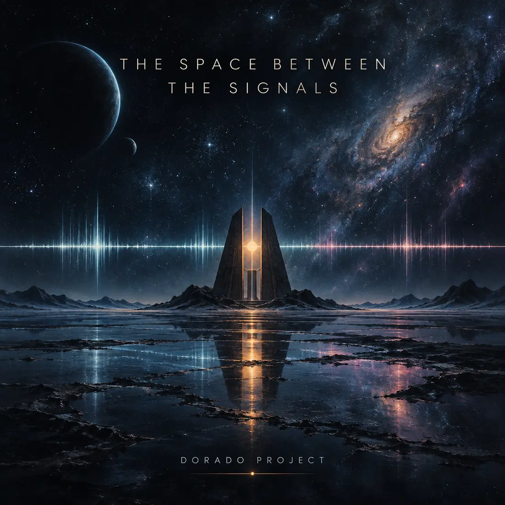

SINGLE · PROGRESSIVE ART ROCK
The Space Between the Signals
Progressive art rock
A slow-burning journey through silence, distance and connection — with analog synthesizers, spacious guitar, fretless bass, deep drums and a distant saxophone.
Listen on Spotify →